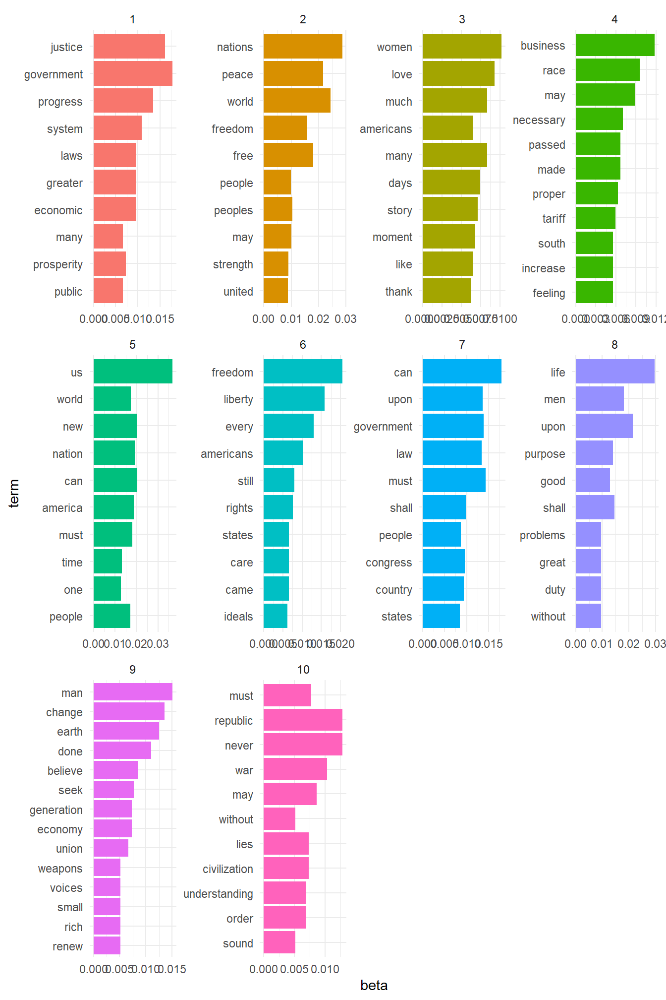
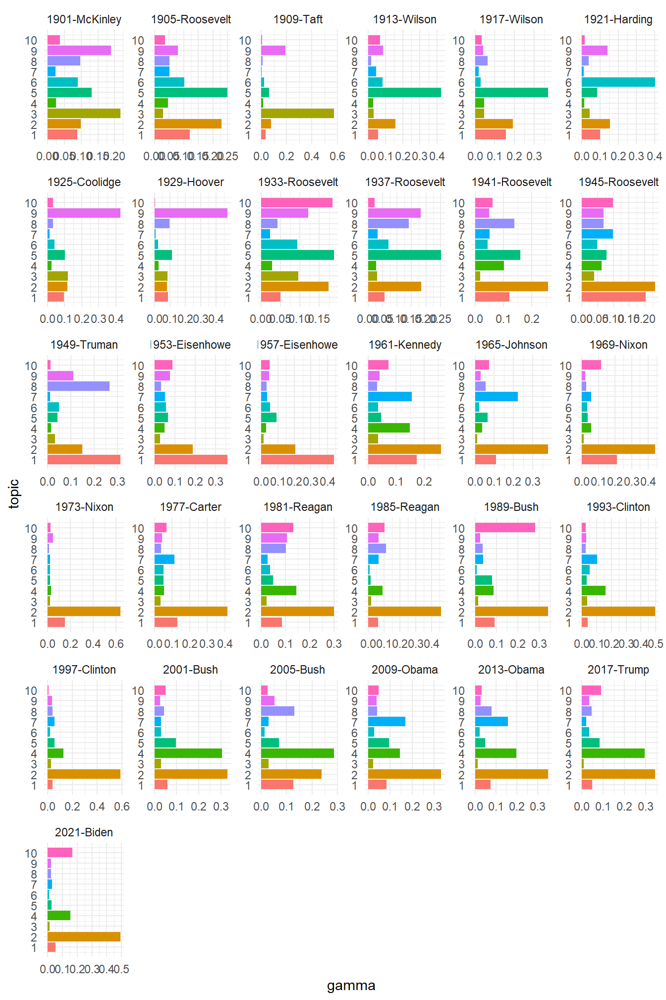

11.1 Latent Dirichlet Allocation
Latent Dirichlet Allocation, or LDA, relies on the idea is that each text is a mix of topics, and each word belongs to one of these. To run LDA, we will use the topicmodels package, and use the inaugural speeches as an example. First, we will use the convert function to convert the data frequency matrix to a data term matrix as this is what topicmodels uses:
Then, we fit an LDA model with 10 topics. First, we have to define some a priori parameters for the model. Here, we will use the Gibbs sampling method to fit the LDA model (Griffiths & Steyvers, 2004) over the alternative VEM approach (Blei et al., 2003). Gibbs sampling performs a random walk over the distribution so we need to set a seed to ensure reproducible results. In this particular example, we set five seeds for five independent runs. We also set a burn-in period of 2000 as the first iterations will not reflect the distribution well, and take the 200th iteration of the following 1000:
The LDA algorithm estimates topic-word probabilities as well as topic-document probabilities that we can extract and visualize. Here, we will start with the topic-word probabilities called beta. To do this, we will use the tidytext package which is part of the tidyverse family of packages. Central to the logic of tidyverse packages is that it does not rely on a document term matrix but represents the data in a long format (Welbers et al., 2017, p. 252). Although this makes it less memory efficient, this lends itself to effective visualisation. The whole logic of these packages is that it works with data which has columns (variables) and rows with single observations. While this is the logic most people know, but it is not always the quickest (and is also not used by quanteda). Yet, it always allows you to look at your data in a way most will understand. First, we run the LDA and have a look at the first 10 terms:
inaugural_lda10 <- LDA(inaugural_dtm, k=10,
method="Gibbs",
control=list(burnin=burnin,
iter=iter,
thin=thin,
seed=seed,
nstart=nstart,
best=best))
terms(inaugural_lda10, 10)## Topic 1 Topic 2 Topic 3 Topic 4 Topic 5 Topic 6
## [1,] "government" "nations" "women" "business" "us" "freedom"
## [2,] "justice" "world" "love" "race" "can" "liberty"
## [3,] "progress" "peace" "many" "may" "new" "every"
## [4,] "system" "free" "much" "necessary" "nation" "americans"
## [5,] "laws" "freedom" "days" "made" "america" "still"
## [6,] "greater" "peoples" "story" "passed" "must" "rights"
## [7,] "economic" "may" "moment" "proper" "world" "care"
## [8,] "prosperity" "people" "like" "tariff" "people" "came"
## [9,] "public" "strength" "americans" "feeling" "time" "states"
## [10,] "many" "united" "thank" "increase" "one" "ideals"
## Topic 7 Topic 8 Topic 9 Topic 10
## [1,] "can" "life" "man" "republic"
## [2,] "must" "upon" "change" "never"
## [3,] "government" "men" "earth" "war"
## [4,] "upon" "shall" "done" "may"
## [5,] "law" "purpose" "believe" "must"
## [6,] "shall" "good" "seek" "civilization"
## [7,] "congress" "great" "economy" "lies"
## [8,] "country" "without" "generation" "order"
## [9,] "people" "problems" "union" "understanding"
## [10,] "states" "duty" "small" "sound"Here, we can see that the first topic is most concerned with words referring to peace and freedom, the second with references to the people, the third with businesses, as so on. While we can interpret our topics this way, a better way might be to visualise the results. For this, we will use the tidy command to prepare the dataset for visualisation. Then, we tell the command to use the information from the beta column, which contains the probability of a word occurring in a certain topic:
library(tidytext)
library(dplyr)
library(ggplot2)
inaugural_lda10_topics <- tidy(inaugural_lda10, matrix="beta")If we would look into the dataset now, we would see that it has 63130 observations with 3 variables. These are the number of the topic, the word (the term) and the beta - the chance that the word occurs in that topic. We now want to visualise only the top ten words for each topic in a bar plot. Also, we want the graphs of each of these ten topics to appear in a single graph. To make this happen, we first have to select the top ten words for each topic. We do so again using a pipe (which is the %>% command). This pipe transports an output of a command to another one before saving it. So here, we take our data set and group it by topic using the group_by command. This command groups the dataset into 10 groups, each for every topic. What this allows us is to calculate things that we otherwise calculate for the whole data-set but here calculate for the groups instead. We then do so and select the top 10 terms (based on their beta value), using top_n. We then ungroup again (to make R view it as a single data-set), and use the arrange function to ensure the data-set sorts the topics in an increasing and the beta values in a decreasing fashion. Finally, we save this into a new object:
inaugural_lda10_topterms <- inaugural_lda10_topics %>%
group_by(topic) %>%
top_n(10, beta) %>%
ungroup() %>%
arrange(topic, -beta)If we now look at the data set, we see that it is much smaller and has the topics ordered. Yet, before we can plot this we have to ensure that (seen from top to bottom), all the beta for the first topic come first, then for the second topic, and so on. To do so, we use the mutate command, and redefine the term variable so that it is re-ordered based first on the term and then on the beta value. The result is a data frame with first the first topic, then the second topic etc., and with the beta values ordered within each topic. We then make the figure, with the terms on the horizontal axis and the beta values and the vertical axes, and have the bars this generates coloured by topic. Also, we switch off the legend (which we do not need) and use the facet_wrap command to split up the total graph (which would have 107 bars otherwise - 107 bars and not a 100 because some terms had the same value for beta). We set the options for the scales to be free as it might be that the beta values for some topics are larger or smaller than for the others. Finally, we flip the graphs and make the x-axis the y-axis and vice versa, as this makes the picture more clear:
inaugural_lda10_topterms %>%
mutate(term=reorder(term, beta)) %>%
ggplot(aes(term, beta, fill=factor(topic))) +
geom_col(show.legend=FALSE) +
facet_wrap(~ topic, scales="free") +
coord_flip()+
theme_minimal()
What is clear here is that looking at only the words in each topic only says so much. In the first topic, the term ‘peace’ is more important than anything else, and so is ‘us’ in topic number 2. Also, in topic number ten, we see that both ‘first’ and ‘need’ are of equal importance.
Another question we can ask is how much of each topic is in each of the documents. Put in another way: do certain documents talk more about certain topics than others? To see this, we first generate a new data frame with this information, known as the gamma value for each document:
We then go through similar steps to make the data set ready for use and prepare the graph. For the graph, the only steps we do different are to force R to label each topic on the axis (as otherwise it will treat it as a continuous variable and come up with useless values such as 7.5), and to give it a different look (using the theme_classic() command):
inaugural_lda10_toptopics <- inaugural_lda10_documents %>%
group_by(document) %>%
top_n(10, gamma) %>%
ungroup() %>%
arrange(topic, -gamma)inaugural_lda10_toptopics %>%
mutate(term=reorder(topic, gamma)) %>%
ggplot(aes(topic, gamma, fill=factor(topic))) +
geom_col(show.legend=FALSE) +
scale_x_continuous(breaks = c(1,2,3,4,5,6,7,8,9,10))+
facet_wrap(~ document, scales="free") +
coord_flip()+
theme_minimal()
Here, we see that in 1929 Hoover talked most often about topic 9 (focusing on government), Biden in 2021 focused on words like ‘us’ and ‘people’, while in 1945 Roosevelt seemed to favour both the people and topics referring to peace. Again, our exact conclusions of course depend on how we interpret the topics.